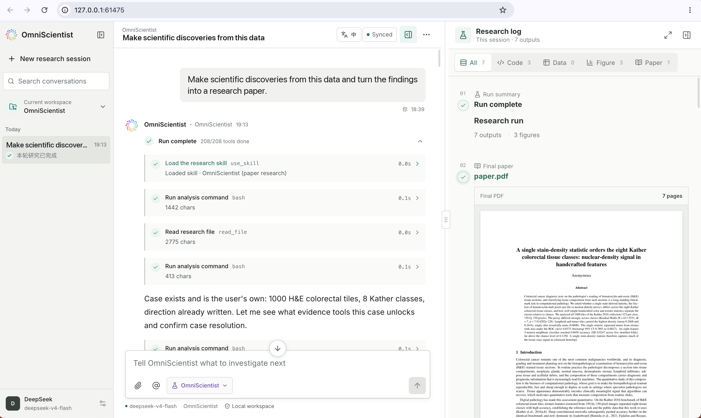
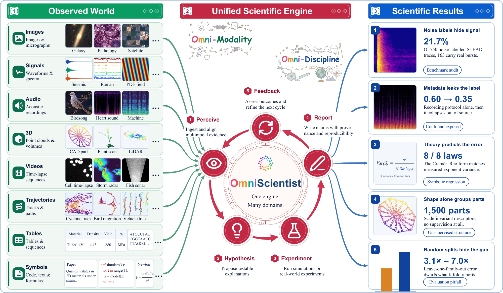
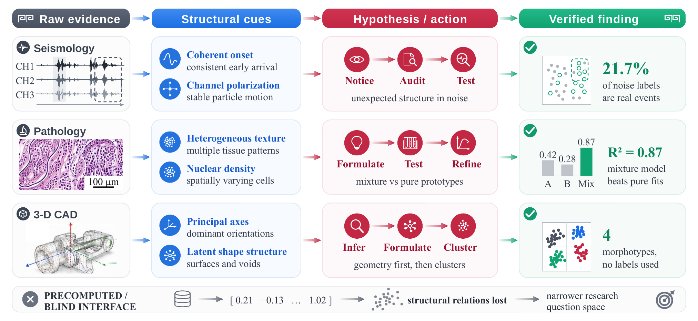
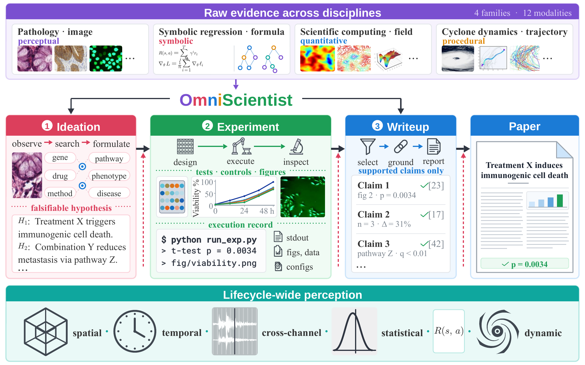
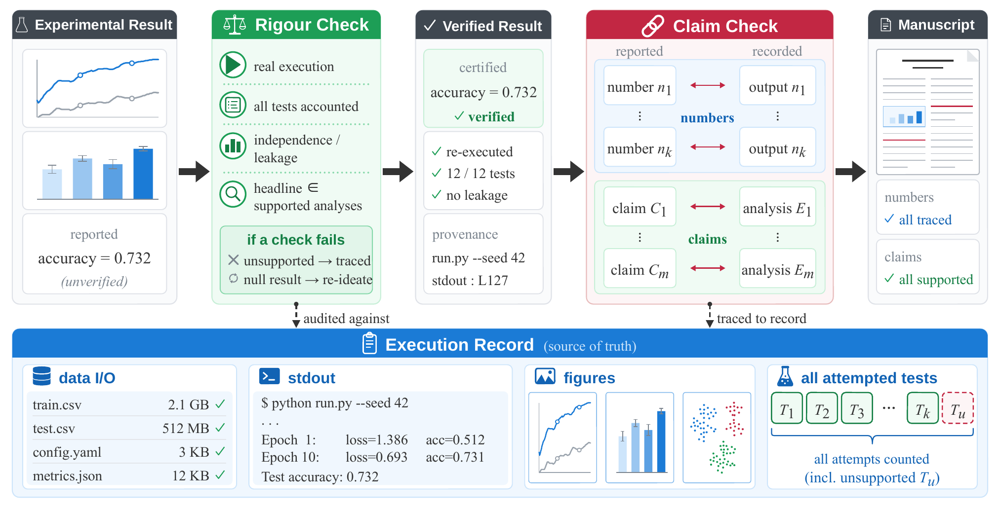
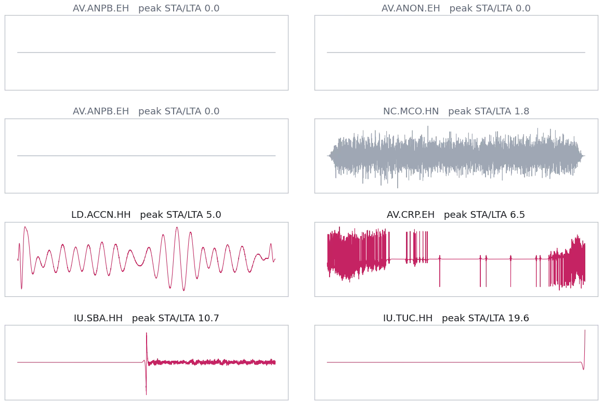
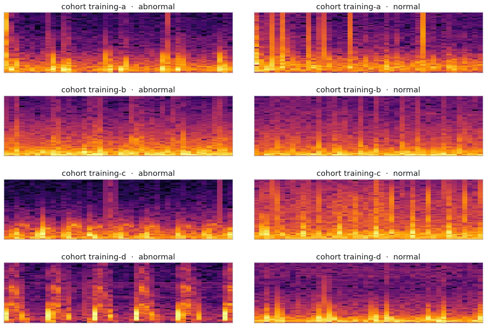
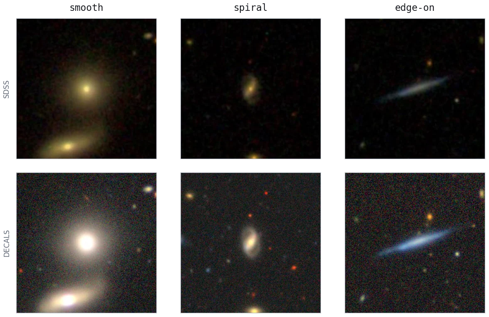
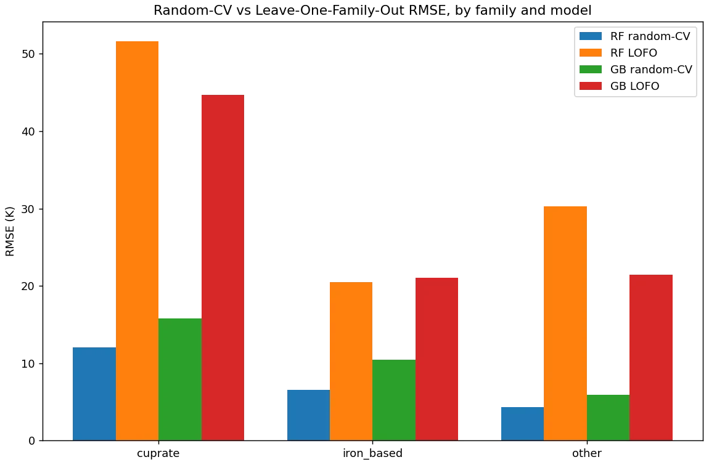
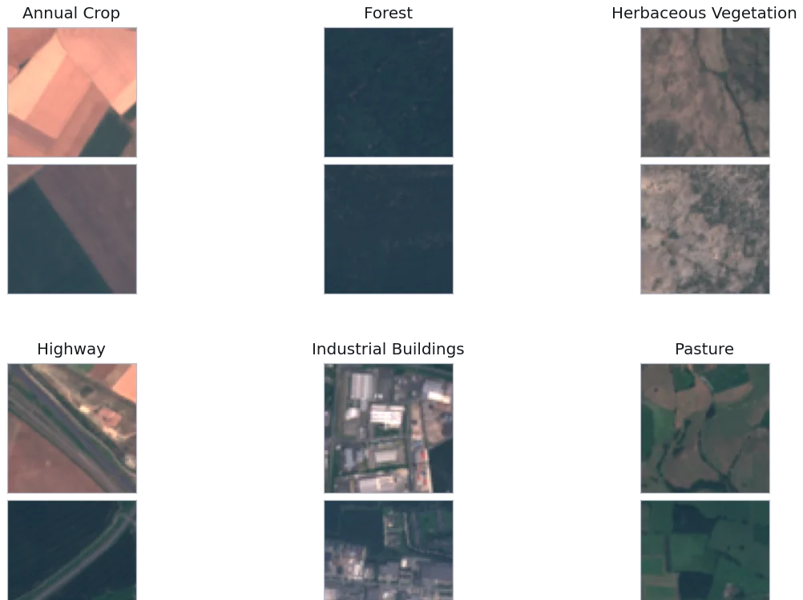

Three complete runs, replayed from their recorded traces: the raw evidence it opened, the papers it read, every line of code it ran, and every time a check sent it back. Pause anywhere, drag the scrubber, take the paper and the log with you.
▶Open all three demosThe first three are the desktop workbench, unpack and open. The skill installs into the agent you are already talking to and is the one edition that needs no API key at all. The CLI is the same engine as a single executable, for a terminal, a server, or CI.
Straight from the latest release. Other architectures, the
terminal agent for every platform and SHA256SUMS are on the
release page.









The same pipeline reads photographs, spectrograms, waveforms, volumes, point clouds, video, trajectories, tables and sequences, across more than twenty disciplines, without first flattening every research object into a scalar benchmark.
Scores run 0 to 10 across seven review dimensions. Composite is their mean. Blue marks the best in a column, green the second.
| Backbone | Novelty | Sound. | Clarity | Signif. | Reprod. | MM ground. | Factual | Composite |
|---|---|---|---|---|---|---|---|---|
| GLM-5.2 | 6.2 | 7.1 | 6.8 | 6.4 | 5.9 | 6.6 | 7.5 | 6.6 |
| Sonnet 5 | 6.3 | 7.0 | 7.0 | 6.3 | 6.1 | 5.1 | 7.8 | 6.5 |
| Kimi K2.7 | 6.2 | 7.2 | 6.7 | 6.2 | 5.5 | 5.8 | 8.0 | 6.5 |
| GPT-5.6 | 5.2 | 6.3 | 6.3 | 5.0 | 5.2 | 4.2 | 7.7 | 5.7 |
| Qwen3.5-122B | 4.7 | 5.5 | 6.2 | 4.8 | 4.8 | 4.8 | 6.5 | 5.3 |
| Qwen3.5-27B | 4.9 | 5.5 | 5.9 | 4.9 | 4.6 | 4.9 | 6.3 | 5.3 |
| Gemma-4-31B | 4.7 | 5.1 | 5.6 | 4.5 | 4.4 | 4.7 | 6.5 | 5.1 |
| Gemma-4-26B | 4.4 | 4.4 | 5.0 | 4.0 | 3.7 | 3.8 | 5.1 | 4.3 |
| Qwen3.5-9B | 4.0 | 4.1 | 4.8 | 3.7 | 3.7 | 3.9 | 4.8 | 4.1 |
| Paper | Discipline | Evidence | Score |
|---|---|---|---|
| Cramér-Rao scaling of exponent precision in monomial Feynman laws | Physics | Formula | 7.1 |
| Sequential versus bursty leaf initiation in 3-D plant scans | Plant science | 3-D scan | 7.2 |
| A continuum-removed index for residue and tillage ordering | Remote sensing | Hyperspectral | 6.3 |
| Transient-impulsivity features across machine types | Machinery | Audio | 7.1 |
| Coherent polarized signals in noise-labelled STEAD traces | Seismology | Signal | 6.9 |
@techreport{omniscientist2026,
title = {OmniScientist: An Omni-Modal Omni-Discipline AI Scientist},
author = {Li, Bobo and Fei, Hao and Ju, Tianjie and Lee, Mong-Li and Hsu, Wynne},
year = {2026},
note = {Technical Report}
}
Every number on this page comes from the run that produced it. Observations are public research datasets; sources and licences are listed in the release documentation.
Then copy the line below into Claude Code, Codex, Hermes Agent, WorkBuddy, or any other agent that can run commands on your machine. It reads the setup document, works out the rest from what the line asks for, runs the install, and reports back what it did.